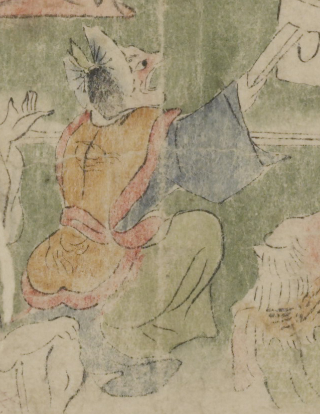

舞人装束を着けた鬼。頭部に冠と老懸を付けている。顔は赤く、鼻が突き出ている。橙色の裲襠、紺色の上着、緑色の袴といった舞人の装束を着け、半腰になり、扇子のようなものを持った右手を前に突き出している。
著作者：坂本弥一郎徳定／出典：親書誌：U426_nichibunken_0080：伊吹山酒呑童子絵巻；イブキヤマシュテンドウジエマキ／日付：2007／資源識別子：U426_nichibunken_0080_0006_0007
Copyright (c)2010- International Research Center for Japanese Studies, Kyoto, Japan. All rights reserved.